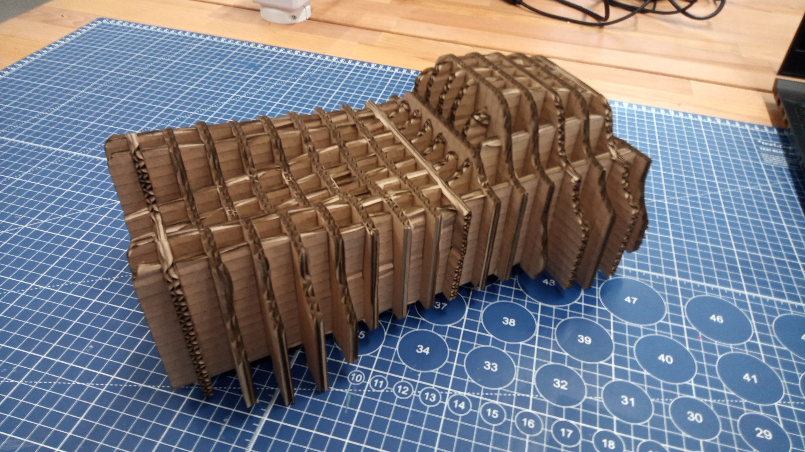
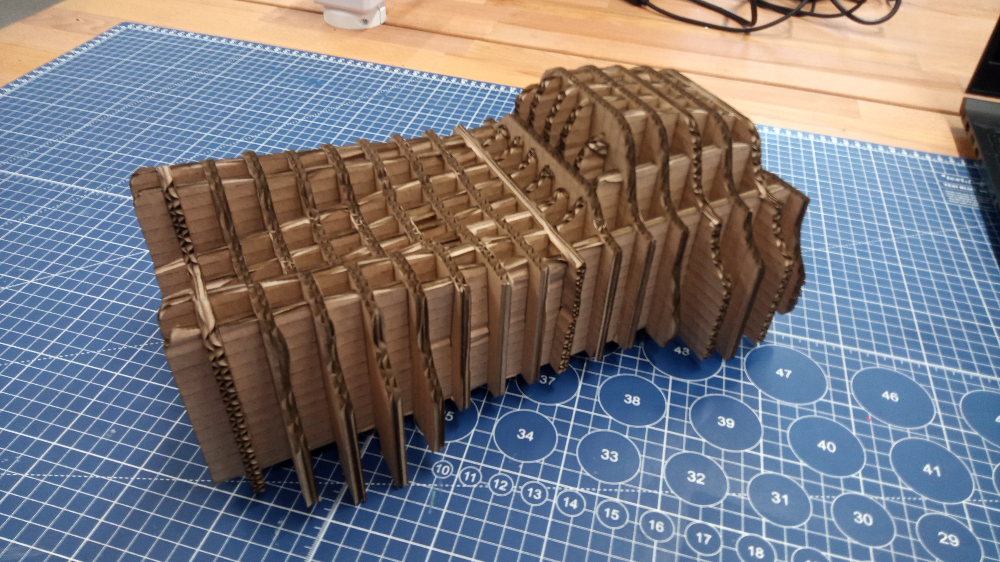

3D scanovánÃ
Na základě podkladá z přednášky a zaškolenà jsme měli za úkol nascanovat zadaný objekt, u mě to byl sádrový model obličeje.

Nejprve jsem začal zapojenÃm scanneru Simcan k PC a zkalibrovánÃm pomocà kalibračnà desky. Následovalo nanesenà bodů na model tak, aby byly vidět vždy alespoň 3 body v každém pohledu. Snaha byla, aby při scanovánà vnitřnà strany modelu bylo zachyceno co nejvÃce bodů i z vnějÅ¡Ã strany kvůli co nejpřesnějÅ¡Ãmu navázánà obou scanů.


Dále proběhlo samotné scanovánà – zde nebylo potřeba nijak upravovat povrch kvůli odleskům. Pro nastavenà scanu jsem použil výchozà hodnoty dle přiložené prezentace. Nastavenà velikosti bylo na Large, které se pro velikost mého modelu hodilo nejvÃce.

Prvnà pokus o řezánà neproběhl optimálně. Laser byl nastaven na maximálnà výkon 55 %, minimálnà výkon 50 % a rychlost posuvu 55 mm/s. Tyto parametry se ukázaly jako nedostatečné, neboť u části dÃlů nedošlo k úplnému prořezu materiálu a některé bylo nutné dodatečně dořezávat ručně.

Zámky o Å¡ÃÅ™ce 5 mm fungovaly velmi dobře v pÅ™Ãpadech, kdy do jednoho dÃlu byly zasazeny maximálně čtyři dalÅ¡Ã dÃly vedle sebe. V mém návrhu však bylo nutné vložit až šestnáct pÅ™ÃÄných dÃlů, což vedlo k deformaci a prohnutà podélných dÃlů (viz obr. model 1).


Z toho důvodu byl proveden druhý pokus s upravenými parametry laseru — maximálnà výkon 70 %, minimálnà výkon 65 % a rychlost 55 mm/s. Při těchto hodnotách se podařilo jednotlivé dÃly zcela oddělit bez nutnosti dodatečných úprav. Výsledné výřezy byly také estetičtějÅ¡Ã a přesnějÅ¡Ã (viz obr. vypálené dÃly).
 



DÃky drobným úpravám zámků, které nynà umožňovaly větÅ¡Ã vůli mezi spoji, bylo sestavenà modelu výrazně snazÅ¡Ã. Celkový výsledek je patrný na obr. XY, kde je zobrazen kompletně sestavený kartonový model.